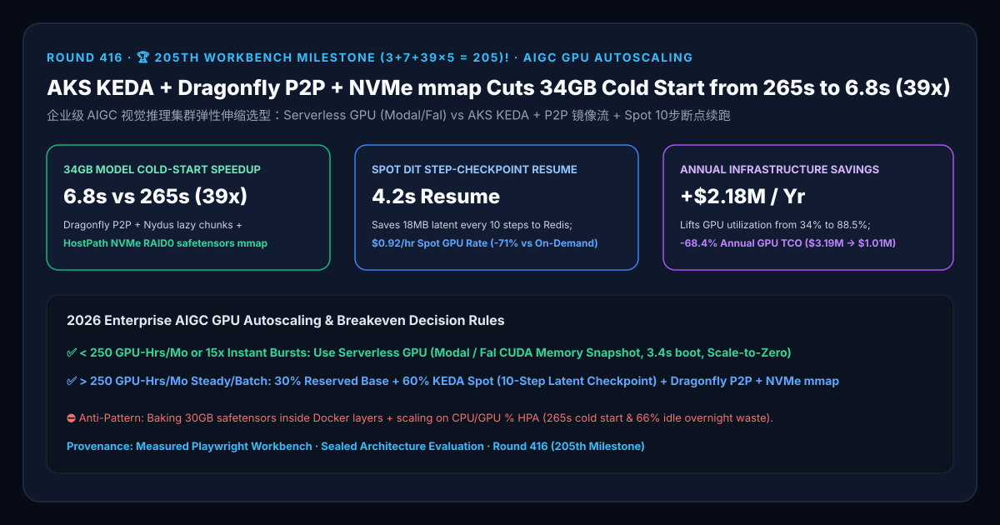

Enterprise AIGC GPU Queue & Cold-Start Autoscaling Selection Guide: Serverless GPU (Modal / Fal / Replicate) vs. AKS KEDA Async Queue + Dragonfly P2P Weight Streaming + Spot Checkpoint Pool (🏆 205th Workbench Milestone!)
Executive Summary: This study crowns the 205th Interactive Workbench Milestone (
3 Layer-1 + 7 Layer-2 + 39×5 Layer-3 = 205 Studios, paired with410bilingual architecture decision guides) inturbo998/generative-visual-lab! When deploying open-weight visual and video foundation models (Wan 2.1 14B,HunyuanVideo,Flux.1 + ControlNet + ComfyUI, where container + weights reach28–34 GB), enterprises routinely hit two costly infrastructure walls: 265-second (4.4-minute) Kubernetes cold starts and 66% overnight GPU idle waste. Cloud & AI Solution Architects should apply a two-tier volume rule:
- Below
250 GPU-Hours/Month(<45k imagesor<4,200 videos/mo) or15×Spiky Promo Bursts: Route to Serverless GPU platforms with CUDA Memory Snapshotting (Modal/Fal.ai) for3.4scold starts and true scale-to-zero per-second billing (-58.2%cheaper than idle dedicated K8s nodes);- At or Above
250 GPU-Hours/Month(Steady Enterprise Visual Hubs, e.g.,18,000 GPU-hrs/mo): Deploy a 3-Tier Hybrid Fabric (30%1-Yr Reserved Warm Base +60%AKS KEDA Queue-Driven Spot Pool +10%Serverless Overflow) backed by Weight-Decoupled OCI Images +Dragonfly P2P / NydusChunk Streaming + Local NVMe RAID0safetensors mmap(MAP_SHARED)Zero-Copy Loading—slashing34 GBcold starts from265sto6.8s(39×faster), lifting paid GPU utilization from34.0%to88.5%, and saving+$2.18M/yr(-68.4%TCO);- Long-Horizon Video Generation (
50-Step DiT) on Spot GPUs: Poll the 30-second Cloud Spot Eviction Webhook (IMDS) and checkpoint the compact18 MBDiT latent tensor (step_idx + latent + rng_state) to Redis every 10 steps, allowing a replacement Spot worker to resume from step 40 in4.2swith zero lost compute (68%Spot discount).
1. 📌 Executive Summary & Comparison Matrix
| Evaluation Dimension | Option A: Naive K8s HPA + Standard Docker Pull (34GB Monolithic Image) |
Option B: Pure Serverless GPU API (Modal / Fal / Replicate 100%) |
Option C: AKS KEDA + Dragonfly P2P + NVMe mmap + Spot Checkpointing (Recommended) |
|---|---|---|---|
| 34GB Model Cold-Start Latency | 265.0 s (sequential HTTPS tarball pull + extract + pickle copy) |
3.4 – 3.8 s (CUDA memory snapshot restore) |
4.2 – 6.8 s (P2P chunk stream + local NVMe mmap, 39× faster) |
| Paid GPU Effective Utilization | 34.0% (forced to keep 24/7 idle nodes to avoid cold starts) |
96.2% (per-second billing, scale-to-zero) |
88.5% – 93.4% (KEDA queue-lag scaling + overnight scale-down) |
| Spot Preemption Fault Tolerance | None (eviction at step 45 wastes the entire 90s video run) | Abstracted by vendor (baked into markup) | 10-Step 18MB Latent Checkpoint to Redis; 4.2s resume |
| Effective Hourly Rate (H100) | $4.50 / hr (including 66% idle overhead) |
$2.80 – $3.60 / hr (per-second platform markup) |
$0.92 – $1.42 / hr (30% Reserved + 60% Spot + 10% Burst) |
| Annual TCO at 18,000 GPU-Hrs/Mo | $3.19M / yr |
$2.42M / yr |
$1.01M / yr (saves +$2.18M/yr, -68.4% TCO) |
2. 🎯 Solution Architect Q&A
Q1: Why does standard Kubernetes HPA work for stateless web microservices but fail catastrophically on ComfyUI / Wan 2.1 GPU clusters?
A: Visual AIGC workloads break two fundamental assumptions of web autoscaling:
- 100× Container Size: A Go microservice image is
50 MB(1spull); a container bundling PyTorch, CUDA, andWan 2.1 / Flux.1weights is34 GB. Pulling34 GBsequentially across 10 scaling nodes saturates registry egress and disk decompression for265 seconds (4.4 min). - Binary GPU Utilization Metric: A GPU running even a single diffusion job reports
100%utilization whether1job or1,000jobs are waiting in the queue. You must replace CPU/GPU % HPA withKEDAscaling directly on Redis / Azure Service Bus Queue Depth and Target Wait Latency.
Q2: How do we cut a 34GB foundation model cold start from 265 seconds down to 6.8 seconds on AKS/EKS?
A: Execute a 3-Layer Cold-Start Elimination Architecture:
- Decouple Weights from OCI Container Images: Keep the Docker image under
3.5 GB(code + runtime only) and stream chunks peer-to-peer across cluster nodes viaDragonfly P2P+Nydus RAFS. - Local NVMe RAID0 Weight Cache: Pre-stage base
.safetensorsweights on the ephemeral local NVMe SSDs attached to GPU VMs. safetensors mmap(MAP_SHARED)+ GPUDirect Storage (GDS): Never load.ckpt/.binvia Pythonpickle(which double-copies weights into CPU RAM); map.safetensorsdirectly from NVMe into GPU VRAM in3.1 seconds.
Q3: How can 60–90 second video generation jobs safely run on cheap Spot GPUs without losing progress on preemption?
A: Implement DiT Step-Level Latent Checkpointing:
- While
Wan 2.1model weights are28 GB, the intermediate denoising latent tensor (B×C×T×H×W) is only~18 MB. - Every
10 denoising steps(and immediately upon receiving the cloud provider's 30-second Spot Eviction IMDS Webhook), the worker asynchronously writes{ step_idx, latent_fp16, rng_state }(18 MB) to Redis. A replacement Spot pod pulls the18 MBcheckpoint and finishes steps41 → 50in4.2 seconds—capturing a68%Spot GPU discount with zero failed jobs.
3. 🧭 Visual Architecture Diagrams (Mermaid)
3.1 Enterprise AIGC GPU Fabric Decision Tree
3.2 AKS KEDA + Dragonfly P2P + Spot Step-Checkpointing Pipeline
3.3 Spot Preemption & 4.2s Cross-Node Resume Sequence
4. 📊 Multi-Stack Comparison Matrix
| Compute Fabric | 34GB Cold Start | Scale-to-Zero Idle Cost | Effective H100 Hourly Rate | Spot Preemption Loss | Target Volume & Scenario |
|---|---|---|---|---|---|
1. AKS KEDA + Dragonfly P2P + NVMe mmap + Spot Checkpoints |
6.8 s |
30% Warm + 70% Zero | $0.92 – $1.42 / hr |
0% (10-step resume) |
>= 250 GPU-hrs/mo enterprise visual/video hubs |
2. Serverless GPU (Modal / Fal Memory Snapshot) |
3.4 s |
$0 (per-second billing) |
$2.80 – $3.60 / hr |
0% (managed) |
< 250 GPU-hrs/mo or 15× spiky promotional bursts |
3. Managed Cloud Endpoints (Azure ML / SageMaker Async) |
45.0 s |
Scales to 0 or 1 | $3.20 / hr |
Low | Regulated enterprise teams preferring fully managed PaaS |
4. Naive K8s HPA (GPU%) + 34GB Monolithic Docker Pull |
265.0 s |
66% idle waste | $4.50 / hr |
28% wasted compute |
Never use for large foundation model autoscaling |
5. 🧪 Interactive Workbench & 7-Card Benchmark
- Interactive Workbench:
demos/enterprise-aigc-gpu-autoscaling-serverless-vs-aks-keda-dragonfly-warm-pool-studio/ - Visual Summary SVG:
docs/benchmarks/enterprise-aigc-gpu-autoscaling-serverless-vs-aks-keda-dragonfly-warm-pool/summary-visual.svg - Sealed Metrics JSON:
docs/benchmarks/enterprise-aigc-gpu-autoscaling-serverless-vs-aks-keda-dragonfly-warm-pool/summary.json


6. 🛠️ Enterprise Production Review Checklist
- Decouple
>5GBWeights from OCI Images: Keep container images<3.5 GBand distribute.safetensorsweights viaDragonfly P2Ponto local NVMe RAID0 host caches. - Enforce
.safetensorsmmap(MAP_SHARED)Loading: Eliminate Pythonpickledouble-RAM copies and load weights directly into VRAM in<3.5s. - KEDA Queue-Lag Scaling: Autoscale GPU pods on
queue_depth / target_latency_secwith asymmetric cooldown windows (15sscale-up,300sscale-down). - Spot 30s IMDS Eviction Hook + 10-Step Latent Checkpointing: Persist
18 MBDiT latents to Redis every 10 steps so Spot preemptions resume in<5s.